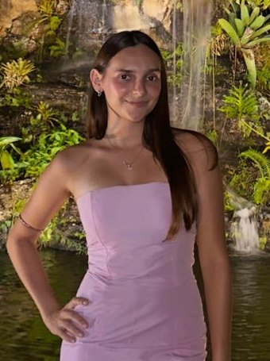

Oportunidades
11triadas para estudantes
Encontre observerships e experiências de shadowing em enfermagem. Escolha uma instituição, confira requisitos e acompanhe sua candidatura — do primeiro e-mail ao aceite final.

Na Itália, pode permanecer sem visto de estudante, mas ainda precisa cumprir exigências acadêmicas e hospitalares. Nos EUA, o passaporte italiano pode permitir uma visita sob ESTA apenas se a atividade e o perfil forem elegíveis — confirme com cada instituição.
O que você marcar aqui não fica salvo em nenhuma conta e não é enviado a ninguém. As marcações ficam apenas neste navegador, neste aparelho, e podem se perder se você trocar de celular ou computador ou limpar os dados de navegação. Use como apoio para se organizar, não como registro oficial.
Instituições com diferentes graus de elegibilidade para estudantes de enfermagem.
11 oportunidades
Próximas datas e progresso das etapas em cada programa.
Prazo divulgado para primavera; confirmar elegibilidade da graduação brasileira antes de enviar. Demais prazos: 30/03 (verão) e 30/06 (outono).
Fechamento da janela Erasmus+ para hospitais; aplicável apenas com bolsa Erasmus+ da universidade de origem e italiano B1.
Próxima janela recorrente publicada para estágio entre outubro de 2027 e março de 2028; confirmar calendário atualizado.
Consultar datas, taxas e disponibilidade de 2027 diretamente ao Global Education Office.
0 etapas marcadas
Checklist-base, sujeito aos requisitos específicos de cada universidade.
0/11 preparados
Este portal não recebe uploads de passaporte, histórico nem dados médicos. As caixas marcadas ficam apenas neste navegador. Envie documentos pessoais exclusivamente pelos formulários oficiais das instituições.
Diferencie acesso ao país, aceitação acadêmica e autorização hospitalar.
Esses campos servem apenas para orientar a triagem e são salvos neste navegador.
As dúvidas que mais mudam uma candidatura internacional.
Sim, se o programa aceitar estudantes de graduação. Houston Methodist, Pádua e CHOP publicam rotas com estudantes. Ainda é preciso verificar período, universidade de origem, semestre e disponibilidade.
Em observership e shadowing passivos, não. A atuação clínica prática segue regras locais de licenciamento e exigências de estágio, que são diferentes.
Não automaticamente. A participação depende da modalidade, convênio, universidade de origem e requisitos acadêmicos; cidadania é diferente de vínculo de mobilidade.
Não. O portal é um guia e rastreador pessoal. Cada candidatura deve ser enviada pelo formulário ou contato oficial do programa.
As marcações ficam salvas no navegador onde você as fez. Use “Exportar progresso” para baixar um arquivo e “Importar” no outro navegador. Não há sincronização automática nem conta.